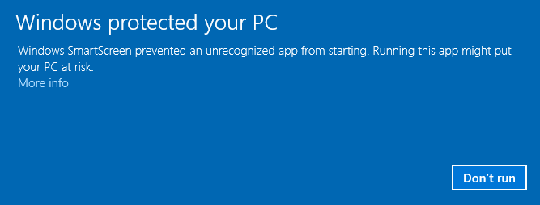
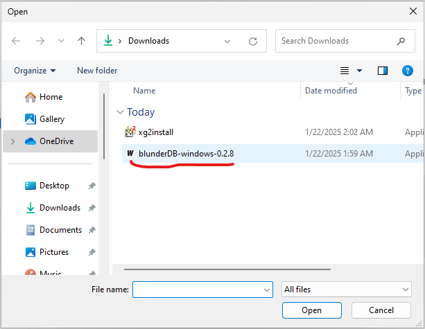

Anhang Windows: Was tun, wenn Windows den Start blockiert
Bemerkung
Das Folgende betrifft die Betriebssysteme Windows 10 und 11.
Windows verlangt heutzutage von Softwareherstellern oder unabhängigen Softwareentwicklern, ihre Anwendungen digital zu zertifizieren oder sie sogar über den Windows Store zu vertreiben. Es wird daher empfohlen, sich an externe Unternehmen zu wenden, um ein digitales Zertifikat zu erhalten, das mehrere hundert Euro kostet (siehe zum Beispiel https://learn.microsoft.com/en-us/archive/blogs/ie_fr/certificats-de-signature-de-code-ev-extended-validation-et-microsoft-smartscreen ).
Da ich blunderDB kostenlos anbiete, möchte ich diese kostspieligen Möglichkeiten nicht in Anspruch nehmen. Ein kostenloser Weg, der quelloffener Software vorbehalten ist (die SignPath Foundation, https://signpath.org/), wurde geprüft, doch die Bewerbung war nicht erfolgreich; die Windows-Binärdateien sind daher nicht digital signiert. Folglich ist es sehr wahrscheinlich, dass Windows Sie vor einer potenziellen Gefahr warnt oder die Ausführung von blunderDB sogar vollständig blockiert. Die folgenden Abschnitte erläutern die Schritte, um die Bedenken von Windows zu umgehen, und wie Sie die Integrität der heruntergeladenen Binärdatei überprüfen können.
Windows-SmartScreen-Warnung
Nach dem Herunterladen von blunderDB kann Windows beim Ausführen eine Warnung der folgenden Art anzeigen:

Bemerkung
Diese Bildschirmkopie stammt von einem englischsprachigen Windows. Auf einem deutschsprachigen Windows heißt derselbe Bildschirm Windows hat Ihren PC geschützt; der anzuklickende Link ist Weitere Informationen, und die Schaltfläche, die danach erscheint, ist Trotzdem ausführen.
In den allermeisten Fällen genügen zwei Klicks — Weitere Informationen, dann Trotzdem ausführen — und es ist nichts weiter zu tun: keine Antivirus-Ausnahme, keine Einstellung zu ändern. Der folgende Abschnitt betrifft nur die seltenen Fälle, in denen die Blockierung nicht von SmartScreen kam.
Wenn Sie eine bestimmte ausführbare Datei zulassen möchten, die von SmartScreen blockiert wird:
Versuchen, die ausführbare Datei auszuführen:
Wenn Sie versuchen, die ausführbare Datei zu starten, kann SmartScreen sie blockieren und eine Warnung anzeigen.
Auf „Weitere Informationen“ klicken:
Klicken Sie im SmartScreen-Warnfenster auf Weitere Informationen.
„Trotzdem ausführen“ auswählen:
Wenn Sie der ausführbaren Datei vertrauen, klicken Sie auf Trotzdem ausführen, um die SmartScreen-Warnung für diesen Fall zu umgehen.
Blockierung durch Windows Defender
Dieser Abschnitt ist ein letzter Ausweg, dem nur zu folgen ist, wenn die Blockierung nicht von SmartScreen kam. Bei bestimmten Sicherheitseinstellungen kann es nämlich vorkommen, dass Windows Defender trotz der oben beschriebenen Freigabe die Ausführung von blunderDB mit Meldungen der folgenden Art verhindert

oder auch:

oder sie sogar in Quarantäne verschieben.
Windows Defender ist dafür bekannt, Fehlalarme auszulösen. Dieses Problem wird ausdrücklich in den FAQ auf der offiziellen Golang-Website ( https://go.dev/doc/faq#virus ) oder in GitHub-Tickets einiger in Go programmierter Projekte ( https://github.com/golang/vscode-go/issues/3182 ) erwähnt.
Warnung
Eine Datei von der Antiviren-Prüfung auszuschließen ist kein harmloser Schritt: Der Ausschluss bezieht sich auf einen Pfad, und jede Datei, die später dort abgelegt wird, entgeht ebenfalls der Prüfung. Überprüfen Sie zunächst den SHA-256-Fingerabdruck der heruntergeladenen Datei (nächster Abschnitt): Er, und nicht der Ausschluss, belegt, dass Sie tatsächlich die veröffentlichte Binärdatei ausführen.
Wenn Sie verhindern möchten, dass die Windows-Sicherheit blunderDB überprüft:
Windows-Sicherheit öffnen:
Gehen Sie zu Start und geben Sie Windows-Sicherheit ein.

Zu „Viren- & Bedrohungsschutz“ gehen:
Klicken Sie auf Viren- & Bedrohungsschutz.

Einstellungen verwalten:
Scrollen Sie nach unten und klicken Sie unter den Einstellungen für Viren- & Bedrohungsschutz auf Einstellungen verwalten.

Ausschlüsse hinzufügen oder entfernen:
Scrollen Sie bis zum Abschnitt Ausschlüsse und klicken Sie auf Ausschlüsse hinzufügen oder entfernen.

Einen Ausschluss hinzufügen:
Klicken Sie auf Einen Ausschluss hinzufügen und wählen Sie Datei. Navigieren Sie anschließend zu der ausführbaren Datei, die Sie ausschließen möchten, und wählen Sie sie aus.



Integrität des Downloads überprüfen (SHA256)
Jede auf der Seite releases veröffentlichte Binärdatei wird von einer .sha256-Datei begleitet, die ihren kryptografischen Fingerabdruck enthält. Die Überprüfung dieses Fingerabdrucks stellt sicher, dass die heruntergeladene Datei authentisch ist und nicht verändert wurde – eine nützliche Garantie, wenn keine Code-Signatur vorhanden ist.
Unter Windows (PowerShell), im Download-Ordner:
Get-FileHash .\blunderDB-windows-<version>.exe -Algorithm SHA256
Vergleichen Sie den angezeigten Wert mit dem in der Datei blunderDB-windows-<version>.exe.sha256. Beide müssen identisch sein.
Unter Linux oder macOS:
sha256sum -c blunderDB-linux-<version>.sha256 # Linux
shasum -a 256 -c blunderDB-macos-<version>.zip.sha256 # macOS